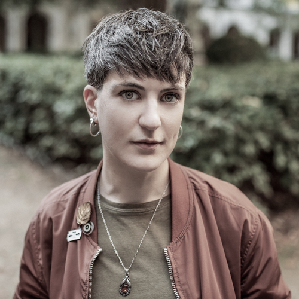

Louise Foret
est comédienne, musicienne et metteuse en scène. Elle se forme au Conservatoire de Saint-Etienne en théâtre et
en composition électro-acoustique, et co-fonde la cie La Tranchante avec Salomé Chabouzy, en 2021. Que ce soit dans
leurs projets ou ceux d’autres cies avec lesquelles elle travaille (Cie de la Commune, Lunée L’ôtre, Nager en Forêt, Cie Facettes…),
une dimension socio-politique est souvent présente puisque c’est l’une des lignes artistiques qu’elle tient à porter sur scène.
Une autre de ces lignes est la musique, qu’elle développe en tant que compositrice et musicienne live pour le théâtre, ainsi que
dans son projet musical solo Erinye.
Elle a été comédienne-musicienne dans les spectacles de La Tranchante (A la fin le colibri il meurt, et Femmes qui parlent vite),
ainsi que dans Je reviens de loin et Elle pas princesse, lui pas héros, de la cie de la Commune (mise en scène Béatrice Bompas), dans Ancrage
et Tours d’Horizon de la cie Lunée l’ôtre (mise en scène Malvina Migné), dans Nous ne savons plus la nuit de la cie Nager en forêt
(texte et conception Lil Cagne), dans les lectures théâtralisées des textes de Théo Perrache (cie Facettes).
Elle a également assisté Laurent Fréchuret à la mise en scène de L’infâme de Simon Grangeat, en 2022.
Elle travaille actuellement sur l'écriture et la mise en scène de Les chiens ne ressentent pas la honte,
avec la cie la Tranchante, pour l'année 2028.